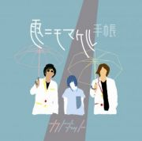

カトキット / 1st Mini Album [雨ニモマケル手帳] 2015.6.17 ON SALE!

カトキットインディーズデビュー作！！
現実は「雨ニモマケル」劣等感の日々。
Vo.あっけのリアルな心模様から奏でる、ひねくれポップミュージック！
<収録曲>
1.「雨ニモマケル」
2.「カクテルクルッテル」
3.「噛みつく」
4.「恋人ごっこ」
5.「CR時給生活」
6.「快感音楽」
DLCR-15061 / 定価:¥1,320(税込)
タワーレコード難波店、京都店にてインストアライブが決定しました！
★タワーレコード難波店 アコースティック ミニライブ＆サイン会 ★
開催日時 ：2015年7月5日(日) 16：00スタート
開催場所：タワーレコード難波店 （5Fイベントスペース）
対象店舗：タワーレコード難波店、梅田ＮＵ茶屋町店、梅田大阪マルビル店、あべのＨｏｏｐ店
イベント特典：「雨ニモマケル」MV使用スーパーボール
＜参加方法＞
ご予約者優先で、タワーレコード難波店、梅田ＮＵ茶屋町店、梅田大阪マルビル店、あべのＨｏｏｐ店にて6/17（水）発売 カトキット 1st MA『雨ニモマケル手帳』（DLCR-15061）をお買い上げの方に先着で「サイン会 参加券」を配布致します。商品ご購入時にCD1枚につき、参加券1枚を差し上げます。
※ミニライブ終了後、サイン会を行います。参加ご希望の方は、参加券と対象の商品を忘れずお持ち下さい。またサイン会に参加して頂いた方全員に「雨ニモマケル」MVで使用したスーパーボールを差し上げます。
＜ご注意事項＞
※対象商品のご予約はお電話とタワーレコードホームページ(http://tower.jp/)の店舗予約サービスでも承っております。
※ご予約のお客様には優先的にサイン会参加券を確保し、商品購入時に差し上げます。
※ミニライブは観覧フリーとなっております。
※「サイン会参加券」をお持ちの方より、開場時間(開演30分前予定)より優先的にご入場頂けます。
※「サイン会参加券」は無くなり次第終了となりますので、ご了承ください。
※イベントはサイン会参加者の待機列が途切れ次第終了とさせて頂きます。
※いかなる場合においても「サイン会参加券」の再発行は致しません。
※対象商品の不良品以外での返品･返金はお断り致します。
※イベント中は録音・録画・撮影等の行為、店内での飲食は一切禁止とさせて頂きます。
※会場周辺での徹夜などの近隣住民・店舗のご迷惑となる行為は禁止させていただきます。
※他のお客様のご迷惑となる行為、また他のお客様に怪我をさせてしまう可能性のある危険な行為は禁止させていただきます。
※イベント中はスタッフがお客様の肩や腕などに触れて誘導する場合がございます。
※イベント当日は係員の指示に必ず従ってください。係員の指示に従って頂けない場合、イベントへのご参加をお断りすることがございます。
※諸事情によりイベントの内容変更や中止がある場合がございます。予めご了承ください。
＜お問い合わせ先＞
タワーレコード難波店：06-6645-5521
＜対象店舗＞
タワーレコード難波店、梅田ＮＵ茶屋町店、梅田大阪マルビル店、あべのＨｏｏｐ店
------------------------------------------------------------------
★タワーレコード京都店 アコースティック ミニライブ＆サイン会 ★
開催日時 ：2015年7月12日(日) 14：00スタート
開催場所：タワーレコード京都店 （7Fイベントスペース）
対象店舗：タワーレコード京都店
イベント特典：「雨ニモマケル」MV使用スーパーボール
＜参加方法＞
ご予約者優先で、タワーレコード京都店にて6/17（水）発売 カトキット 1st MA『雨ニモマケル手帳』（DLCR-15061）をお買い上げの方に先着で「サイン会 参加券」を配布致します。商品ご購入時にCD1枚につき、参加券1枚を差し上げます。
※ミニライブ終了後、サイン会を行います。参加ご希望の方は、参加券と対象の商品を忘れずお持ち下さい。またサイン会に参加して頂いた方全員に「雨ニモマケル」MVで使用したスーパーボールを差し上げます。
＜ご注意事項＞
※対象商品のご予約は店舗とお電話で承っております。
※ご予約のお客様には優先的にサイン会参加券を確保し、商品購入時に差し上げます。
※ミニライブは観覧フリーとなっております。
※「サイン会参加券」は無くなり次第終了となりますので、ご了承ください。
※イベントはサイン会参加者の待機列が途切れ次第終了とさせて頂きます。
※いかなる場合においても「サイン会参加券」の再発行は致しません。
※対象商品の不良品以外での返品･返金はお断り致します。
※イベント中は録音・録画・撮影等の行為、店内での飲食は一切禁止とさせて頂きます。
※イベント当日は係員の指示に必ず従ってください。係員の指示に従って頂けない場合、イベントへのご参加をお断りすることがございます。
※諸事情によりイベントの内容変更や中止がある場合がございます。予めご了承ください。
＜お問い合わせ先＞
タワーレコード京都店：075-212-7058
------------------------------------------------------------------
雨ニモマケル手帳(アルバムタイトル)
宮沢賢治の「雨ニモマケズ」は遺作。 作品として発表されたものではなく、死後、手帳より発見された。
研究者の間ではその手帳を「雨ニモマケズ手帳」と呼んでいる。
宮沢賢治の「雨ニモマケズ」と同じように「雨」から始まり「あたしはなりたい」で終わるこのアルバム。
詩集を読んでいるような感覚で歌詞カードに目を通してほしいという思いを込めてつけました。
「何も堪える必要なんかないさと ヘッドフォンから寄り添うような音楽にあたしはなりたい」(「快感音楽」より)